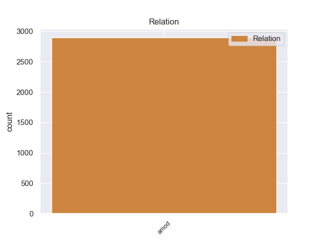
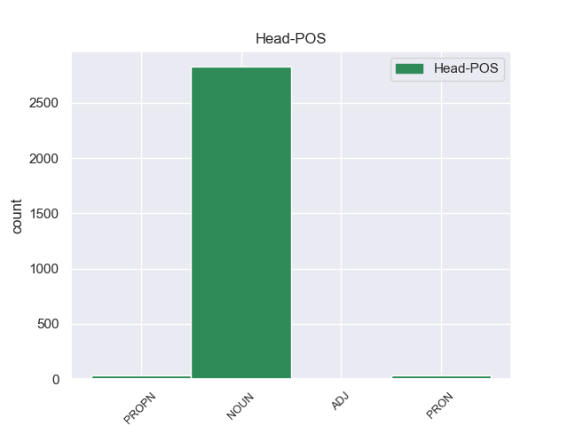
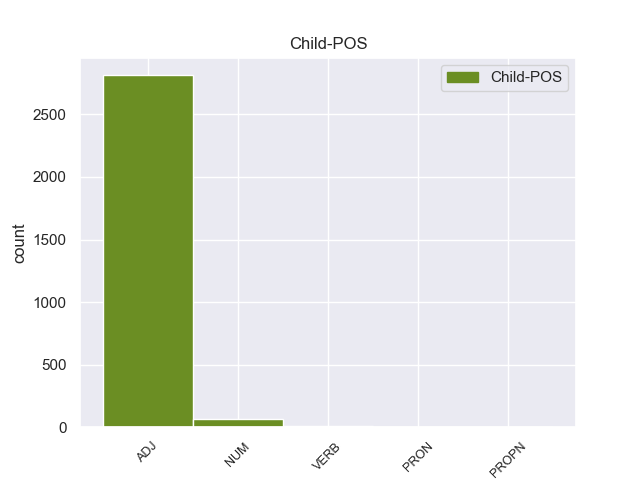

Distribution of features within this leaf



Agreement Rules sorted by frequency.
- When the dependent token is the adjectival modifier(amod) of the head token, and the dependent token is ADJ.
1 Υποστήριξε _ _ _ _ 0 _ _ _
2 πως _ _ _ _ 0 _ _ _
3 τα _ _ _ _ 0 _ _ _
4 ανθρώπινα ανθρώπινος ADJ ADJ Case=Nom|Gender=Neut|Number=Plur 5 amod _ _
5 δικαιώματα δικαίωμα NOUN NOUN Case=Nom|Gender=Neut|Number=Plur 0 _ _ _
6 των _ _ _ _ 0 _ _ _
7 Θιβετιανών _ _ _ _ 0 _ _ _
8 παραβιάζονται _ _ _ _ 0 _ _ _
9 μέσω _ _ _ _ 0 _ _ _
10 διακρίσεων _ _ _ _ 0 _ _ _
11 , _ _ _ _ 0 _ _ _
12 σε _ _ _ _ 0 _ _ _
13 εφαρμογή _ _ _ _ 0 _ _ _
14 μιας _ _ _ _ 0 _ _ _
15 πολιτικής _ _ _ _ 0 _ _ _
16 που _ _ _ _ 0 _ _ _
17 οι _ _ _ _ 0 _ _ _
18 Κινέζοι _ _ _ _ 0 _ _ _
19 αποκαλούν _ _ _ _ 0 _ _ _
20 " _ _ _ _ 0 _ _ _
21 διαχωρισμός _ _ _ _ 0 _ _ _
22 και _ _ _ _ 0 _ _ _
23 αφομοίωση _ _ _ _ 0 _ _ _
24 " _ _ _ _ 0 _ _ _
25 . _ _ _ _ 0 _ _ _
1 Η _ _ _ _ 0 _ _ _
2 πρώτη πρώτος NUM NUM Case=Nom|Gender=Fem|Number=Sing|NumType=Ord 3 amod _ _
3 ειδοποίηση ειδοποίηση NOUN NOUN Case=Nom|Gender=Fem|Number=Sing 0 _ _ _
4 θα _ _ _ _ 0 _ _ _
5 γίνεται _ _ _ _ 0 _ _ _
6 με _ _ _ _ 0 _ _ _
7 την _ _ _ _ 0 _ _ _
8 παρέλευση _ _ _ _ 0 _ _ _
9 πέντε _ _ _ _ 0 _ _ _
10 χρόνων _ _ _ _ 0 _ _ _
11 από _ _ _ _ 0 _ _ _
12 την _ _ _ _ 0 _ _ _
13 ημερομηνία _ _ _ _ 0 _ _ _
14 που _ _ _ _ 0 _ _ _
15 ανοίχθηκε _ _ _ _ 0 _ _ _
16 ο _ _ _ _ 0 _ _ _
17 λογαριασμός _ _ _ _ 0 _ _ _
18 , _ _ _ _ 0 _ _ _
19 η _ _ _ _ 0 _ _ _
20 δεύτερη _ _ _ _ 0 _ _ _
21 σ _ _ _ _ 0 _ _ _
22 την _ _ _ _ 0 _ _ _
23 10ετία _ _ _ _ 0 _ _ _
24 και _ _ _ _ 0 _ _ _
25 η _ _ _ _ 0 _ _ _
26 τρίτη _ _ _ _ 0 _ _ _
27 σ _ _ _ _ 0 _ _ _
28 την _ _ _ _ 0 _ _ _
29 15ετία _ _ _ _ 0 _ _ _
30 . _ _ _ _ 0 _ _ _
1 Όπως _ _ _ _ 0 _ _ _
2 ανέφεραν _ _ _ _ 0 _ _ _
3 , _ _ _ _ 0 _ _ _
4 « _ _ _ _ 0 _ _ _
5 οι _ _ _ _ 0 _ _ _
6 συμπλοκές _ _ _ _ 0 _ _ _
7 ξέσπασαν _ _ _ _ 0 _ _ _
8 σ _ _ _ _ 0 _ _ _
9 την _ _ _ _ 0 _ _ _
10 επαρχία _ _ _ _ 0 _ _ _
11 Αμπιγιάν _ _ _ _ 0 _ _ _
12 , _ _ _ _ 0 _ _ _
13 όταν _ _ _ _ 0 _ _ _
14 οι _ _ _ _ 0 _ _ _
15 ένοπλοι _ _ _ _ 0 _ _ _
16 πυροδότησαν _ _ _ _ 0 _ _ _
17 αυτοκίνητα αυτοκίνητο NOUN NOUN Case=Acc|Gender=Neut|Number=Plur 0 _ _ _
18 παγιδευμένα παγιδευμένος VERB VERB Aspect=Perf|Case=Acc|Gender=Neut|Number=Plur|VerbForm=Part|Voice=Pass 17 amod _ _
19 με _ _ _ _ 0 _ _ _
20 εκρηκτικά _ _ _ _ 0 _ _ _
21 και _ _ _ _ 0 _ _ _
22 κατέλαβαν _ _ _ _ 0 _ _ _
23 στρατιωτικό _ _ _ _ 0 _ _ _
24 φυλάκιο _ _ _ _ 0 _ _ _
25 σ _ _ _ _ 0 _ _ _
26 την _ _ _ _ 0 _ _ _
27 περιοχή _ _ _ _ 0 _ _ _
28 Κουντ _ _ _ _ 0 _ _ _
29 κοντά _ _ _ _ 0 _ _ _
30 σ _ _ _ _ 0 _ _ _
31 την _ _ _ _ 0 _ _ _
32 πρωτεύουσα _ _ _ _ 0 _ _ _
33 της _ _ _ _ 0 _ _ _
34 επαρχίας _ _ _ _ 0 _ _ _
35 Ζίνζιμπαρ _ _ _ _ 0 _ _ _
36 » _ _ _ _ 0 _ _ _
37 . _ _ _ _ 0 _ _ _
1 Η _ _ _ _ 0 _ _ _
2 νέα νέος PROPN PROPN Case=Nom|Gender=Fem|Number=Sing 3 amod _ _
3 πρόταση πρόταση NOUN NOUN Case=Nom|Gender=Fem|Number=Sing 0 _ _ _
4 της _ _ _ _ 0 _ _ _
5 Επιτροπής _ _ _ _ 0 _ _ _
6 επιτρέπει _ _ _ _ 0 _ _ _
7 τη _ _ _ _ 0 _ _ _
8 χρήση _ _ _ _ 0 _ _ _
9 εμβολίων _ _ _ _ 0 _ _ _
10 , _ _ _ _ 0 _ _ _
11 είναι _ _ _ _ 0 _ _ _
12 όμως _ _ _ _ 0 _ _ _
13 σημαντικό _ _ _ _ 0 _ _ _
14 να _ _ _ _ 0 _ _ _
15 σημειώσουμε _ _ _ _ 0 _ _ _
16 ότι _ _ _ _ 0 _ _ _
17 σήμερα _ _ _ _ 0 _ _ _
18 δεν _ _ _ _ 0 _ _ _
19 έχει _ _ _ _ 0 _ _ _
20 βρεθεί _ _ _ _ 0 _ _ _
21 κάποιο _ _ _ _ 0 _ _ _
22 εμβόλιο _ _ _ _ 0 _ _ _
23 . _ _ _ _ 0 _ _ _
1 Εγώ _ _ _ _ 0 _ _ _
2 αισθάνομαι _ _ _ _ 0 _ _ _
3 υποχρεωμένος _ _ _ _ 0 _ _ _
4 να _ _ _ _ 0 _ _ _
5 ζητήσω _ _ _ _ 0 _ _ _
6 για _ _ _ _ 0 _ _ _
7 άλλη _ _ _ _ 0 _ _ _
8 μία _ _ _ _ 0 _ _ _
9 φορά _ _ _ _ 0 _ _ _
10 να _ _ _ _ 0 _ _ _
11 παρέμβετε _ _ _ _ 0 _ _ _
12 εσείς _ _ _ _ 0 _ _ _
13 και _ _ _ _ 0 _ _ _
14 η _ _ _ _ 0 _ _ _
15 Επιτροπή _ _ _ _ 0 _ _ _
16 για _ _ _ _ 0 _ _ _
17 να _ _ _ _ 0 _ _ _
18 διεξαχθεί _ _ _ _ 0 _ _ _
19 αυτή _ _ _ _ 0 _ _ _
20 η _ _ _ _ 0 _ _ _
21 δίκη _ _ _ _ 0 _ _ _
22 με _ _ _ _ 0 _ _ _
23 απόλυτο _ _ _ _ 0 _ _ _
24 σεβασμό _ _ _ _ 0 _ _ _
25 προς _ _ _ _ 0 _ _ _
26 τα _ _ _ _ 0 _ _ _
27 ανθρώπινα _ _ _ _ 0 _ _ _
28 δικαιώματα _ _ _ _ 0 _ _ _
29 και _ _ _ _ 0 _ _ _
30 για _ _ _ _ 0 _ _ _
31 να _ _ _ _ 0 _ _ _
32 μην _ _ _ _ 0 _ _ _
33 καταδικαστούν _ _ _ _ 0 _ _ _
34 σε _ _ _ _ 0 _ _ _
35 θάνατο _ _ _ _ 0 _ _ _
36 δεκατρία δεκατρία PRON PRON Case=Nom|Gender=Neut|Number=Plur|Person=3|PronType=Rel 37 amod _ _
37 άτομα άτομο NOUN NOUN Case=Nom|Gender=Neut|Number=Plur 0 _ _ _
38 χωρίς _ _ _ _ 0 _ _ _
39 να _ _ _ _ 0 _ _ _
40 ξέρουν _ _ _ _ 0 _ _ _
41 ούτε _ _ _ _ 0 _ _ _
42 πώς _ _ _ _ 0 _ _ _
43 ούτε _ _ _ _ 0 _ _ _
44 γιατί _ _ _ _ 0 _ _ _
45 , _ _ _ _ 0 _ _ _
46 δεδομένου _ _ _ _ 0 _ _ _
47 ότι _ _ _ _ 0 _ _ _
48 και _ _ _ _ 0 _ _ _
49 αυτό _ _ _ _ 0 _ _ _
50 το _ _ _ _ 0 _ _ _
51 Κοινοβούλιο _ _ _ _ 0 _ _ _
52 έχει _ _ _ _ 0 _ _ _
53 επανειλημμένως _ _ _ _ 0 _ _ _
54 τοποθετηθεί _ _ _ _ 0 _ _ _
55 εναντίον _ _ _ _ 0 _ _ _
56 της _ _ _ _ 0 _ _ _
57 θανατικής _ _ _ _ 0 _ _ _
58 ποινής _ _ _ _ 0 _ _ _
59 . _ _ _ _ 0 _ _ _
Disagree Examples:
1 Μπροστά _ _ _ _ 0 _ _ _
2 σε _ _ _ _ 0 _ _ _
3 αυτή _ _ _ _ 0 _ _ _
4 την _ _ _ _ 0 _ _ _
5 άκρως άκρως ADJ ADJ Case=Acc|Gender=Fem|Number=Plur 7 amod _ _
6 ανησυχητική _ _ _ _ 0 _ _ _
7 εικόνα εικόνας NOUN NOUN Case=Acc|Gender=Masc|Number=Sing 0 _ _ _
8 , _ _ _ _ 0 _ _ _
9 που _ _ _ _ 0 _ _ _
10 μας _ _ _ _ 0 _ _ _
11 δείχνει _ _ _ _ 0 _ _ _
12 ότι _ _ _ _ 0 _ _ _
13 οι _ _ _ _ 0 _ _ _
14 οδικές _ _ _ _ 0 _ _ _
15 μεταφορές _ _ _ _ 0 _ _ _
16 ευθύνονται _ _ _ _ 0 _ _ _
17 για _ _ _ _ 0 _ _ _
18 το _ _ _ _ 0 _ _ _
19 85% _ _ _ _ 0 _ _ _
20 των _ _ _ _ 0 _ _ _
21 συνολικών _ _ _ _ 0 _ _ _
22 εκπομπών _ _ _ _ 0 _ _ _
23 διοξειδίου _ _ _ _ 0 _ _ _
24 του _ _ _ _ 0 _ _ _
25 άνθρακα _ _ _ _ 0 _ _ _
26 που _ _ _ _ 0 _ _ _
27 προέρχονται _ _ _ _ 0 _ _ _
28 από _ _ _ _ 0 _ _ _
29 τον _ _ _ _ 0 _ _ _
30 τομέα _ _ _ _ 0 _ _ _
31 των _ _ _ _ 0 _ _ _
32 μεταφορών _ _ _ _ 0 _ _ _
33 και _ _ _ _ 0 _ _ _
34 μπροστά _ _ _ _ 0 _ _ _
35 σ _ _ _ _ 0 _ _ _
36 την _ _ _ _ 0 _ _ _
37 επιτακτική _ _ _ _ 0 _ _ _
38 ανάγκη _ _ _ _ 0 _ _ _
39 να _ _ _ _ 0 _ _ _
40 προχωρήσουμε _ _ _ _ 0 _ _ _
41 σε _ _ _ _ 0 _ _ _
42 δράση _ _ _ _ 0 _ _ _
43 δεν _ _ _ _ 0 _ _ _
44 μπορούμε _ _ _ _ 0 _ _ _
45 παρά _ _ _ _ 0 _ _ _
46 να _ _ _ _ 0 _ _ _
47 επικροτήσουμε _ _ _ _ 0 _ _ _
48 τη _ _ _ _ 0 _ _ _
49 συμφωνία _ _ _ _ 0 _ _ _
50 που _ _ _ _ 0 _ _ _
51 επιτεύχθηκε _ _ _ _ 0 _ _ _
52 σ _ _ _ _ 0 _ _ _
53 την _ _ _ _ 0 _ _ _
54 επιτροπή _ _ _ _ 0 _ _ _
55 συνδιαλλαγής _ _ _ _ 0 _ _ _
56 αναφορικά _ _ _ _ 0 _ _ _
57 με _ _ _ _ 0 _ _ _
58 αυτό _ _ _ _ 0 _ _ _
59 το _ _ _ _ 0 _ _ _
60 σύστημα _ _ _ _ 0 _ _ _
61 παρακολούθησης _ _ _ _ 0 _ _ _
62 των _ _ _ _ 0 _ _ _
63 εκπομπών _ _ _ _ 0 _ _ _
64 διοξειδίου _ _ _ _ 0 _ _ _
65 του _ _ _ _ 0 _ _ _
66 άνθρακα _ _ _ _ 0 _ _ _
67 που _ _ _ _ 0 _ _ _
68 προέρχονται _ _ _ _ 0 _ _ _
69 από _ _ _ _ 0 _ _ _
70 τα _ _ _ _ 0 _ _ _
71 ελαφρά _ _ _ _ 0 _ _ _
72 επιβατηγά _ _ _ _ 0 _ _ _
73 αυτοκίνητα _ _ _ _ 0 _ _ _
74 . _ _ _ _ 0 _ _ _
1 Μπροστά _ _ _ _ 0 _ _ _
2 σε _ _ _ _ 0 _ _ _
3 αυτή _ _ _ _ 0 _ _ _
4 την _ _ _ _ 0 _ _ _
5 άκρως _ _ _ _ 0 _ _ _
6 ανησυχητική ανησυχητικός ADJ ADJ Case=Acc|Gender=Fem|Number=Sing 7 amod _ _
7 εικόνα εικόνας NOUN NOUN Case=Acc|Gender=Masc|Number=Sing 0 _ _ _
8 , _ _ _ _ 0 _ _ _
9 που _ _ _ _ 0 _ _ _
10 μας _ _ _ _ 0 _ _ _
11 δείχνει _ _ _ _ 0 _ _ _
12 ότι _ _ _ _ 0 _ _ _
13 οι _ _ _ _ 0 _ _ _
14 οδικές _ _ _ _ 0 _ _ _
15 μεταφορές _ _ _ _ 0 _ _ _
16 ευθύνονται _ _ _ _ 0 _ _ _
17 για _ _ _ _ 0 _ _ _
18 το _ _ _ _ 0 _ _ _
19 85% _ _ _ _ 0 _ _ _
20 των _ _ _ _ 0 _ _ _
21 συνολικών _ _ _ _ 0 _ _ _
22 εκπομπών _ _ _ _ 0 _ _ _
23 διοξειδίου _ _ _ _ 0 _ _ _
24 του _ _ _ _ 0 _ _ _
25 άνθρακα _ _ _ _ 0 _ _ _
26 που _ _ _ _ 0 _ _ _
27 προέρχονται _ _ _ _ 0 _ _ _
28 από _ _ _ _ 0 _ _ _
29 τον _ _ _ _ 0 _ _ _
30 τομέα _ _ _ _ 0 _ _ _
31 των _ _ _ _ 0 _ _ _
32 μεταφορών _ _ _ _ 0 _ _ _
33 και _ _ _ _ 0 _ _ _
34 μπροστά _ _ _ _ 0 _ _ _
35 σ _ _ _ _ 0 _ _ _
36 την _ _ _ _ 0 _ _ _
37 επιτακτική _ _ _ _ 0 _ _ _
38 ανάγκη _ _ _ _ 0 _ _ _
39 να _ _ _ _ 0 _ _ _
40 προχωρήσουμε _ _ _ _ 0 _ _ _
41 σε _ _ _ _ 0 _ _ _
42 δράση _ _ _ _ 0 _ _ _
43 δεν _ _ _ _ 0 _ _ _
44 μπορούμε _ _ _ _ 0 _ _ _
45 παρά _ _ _ _ 0 _ _ _
46 να _ _ _ _ 0 _ _ _
47 επικροτήσουμε _ _ _ _ 0 _ _ _
48 τη _ _ _ _ 0 _ _ _
49 συμφωνία _ _ _ _ 0 _ _ _
50 που _ _ _ _ 0 _ _ _
51 επιτεύχθηκε _ _ _ _ 0 _ _ _
52 σ _ _ _ _ 0 _ _ _
53 την _ _ _ _ 0 _ _ _
54 επιτροπή _ _ _ _ 0 _ _ _
55 συνδιαλλαγής _ _ _ _ 0 _ _ _
56 αναφορικά _ _ _ _ 0 _ _ _
57 με _ _ _ _ 0 _ _ _
58 αυτό _ _ _ _ 0 _ _ _
59 το _ _ _ _ 0 _ _ _
60 σύστημα _ _ _ _ 0 _ _ _
61 παρακολούθησης _ _ _ _ 0 _ _ _
62 των _ _ _ _ 0 _ _ _
63 εκπομπών _ _ _ _ 0 _ _ _
64 διοξειδίου _ _ _ _ 0 _ _ _
65 του _ _ _ _ 0 _ _ _
66 άνθρακα _ _ _ _ 0 _ _ _
67 που _ _ _ _ 0 _ _ _
68 προέρχονται _ _ _ _ 0 _ _ _
69 από _ _ _ _ 0 _ _ _
70 τα _ _ _ _ 0 _ _ _
71 ελαφρά _ _ _ _ 0 _ _ _
72 επιβατηγά _ _ _ _ 0 _ _ _
73 αυτοκίνητα _ _ _ _ 0 _ _ _
74 . _ _ _ _ 0 _ _ _
1 Θέλω _ _ _ _ 0 _ _ _
2 να _ _ _ _ 0 _ _ _
3 δηλώσω _ _ _ _ 0 _ _ _
4 ότι _ _ _ _ 0 _ _ _
5 το _ _ _ _ 0 _ _ _
6 συνολικό _ _ _ _ 0 _ _ _
7 αποτέλεσμα _ _ _ _ 0 _ _ _
8 που _ _ _ _ 0 _ _ _
9 μας _ _ _ _ 0 _ _ _
10 παρουσιάζεται _ _ _ _ 0 _ _ _
11 είναι _ _ _ _ 0 _ _ _
12 το _ _ _ _ 0 _ _ _
13 λιγότερο λιγότερος ADJ ADJ Case=Acc|Degree=Cmp|Gender=Neut|Number=Sing 14 amod _ _
14 ασαφές ασαφή NOUN NOUN Case=Acc|Gender=Fem|Number=Plur 0 _ _ _
15 . _ _ _ _ 0 _ _ _
1 Αυτό _ _ _ _ 0 _ _ _
2 θα _ _ _ _ 0 _ _ _
3 μπορούσε _ _ _ _ 0 _ _ _
4 να _ _ _ _ 0 _ _ _
5 αποτελέσει _ _ _ _ 0 _ _ _
6 ένα _ _ _ _ 0 _ _ _
7 συγκεκριμένο _ _ _ _ 0 _ _ _
8 βήμα _ _ _ _ 0 _ _ _
9 , _ _ _ _ 0 _ _ _
10 επειδή _ _ _ _ 0 _ _ _
11 ένα _ _ _ _ 0 _ _ _
12 μεγάλο μεγάλος ADJ ADJ Case=Acc|Gender=Masc|Number=Sing 13 amod _ _
13 μέρος μέρος NOUN NOUN Case=Acc|Gender=Neut|Number=Sing 0 _ _ _
14 από _ _ _ _ 0 _ _ _
15 τα _ _ _ _ 0 _ _ _
16 χρήματα _ _ _ _ 0 _ _ _
17 που _ _ _ _ 0 _ _ _
18 διαθέτουμε _ _ _ _ 0 _ _ _
19 δεν _ _ _ _ 0 _ _ _
20 φθάνει _ _ _ _ 0 _ _ _
21 ποτέ _ _ _ _ 0 _ _ _
22 σ _ _ _ _ 0 _ _ _
23 τους _ _ _ _ 0 _ _ _
24 φτωχούς _ _ _ _ 0 _ _ _
25 και _ _ _ _ 0 _ _ _
26 δεν _ _ _ _ 0 _ _ _
27 συμβάλλει _ _ _ _ 0 _ _ _
28 πραγματικά _ _ _ _ 0 _ _ _
29 σ _ _ _ _ 0 _ _ _
30 την _ _ _ _ 0 _ _ _
31 ανάπτυξη _ _ _ _ 0 _ _ _
32 . _ _ _ _ 0 _ _ _
1 Πρώτον _ _ _ _ 0 _ _ _
2 , _ _ _ _ 0 _ _ _
3 η _ _ _ _ 0 _ _ _
4 ελευθέρωση _ _ _ _ 0 _ _ _
5 των _ _ _ _ 0 _ _ _
6 σιδηροδρομικών _ _ _ _ 0 _ _ _
7 δικτύων _ _ _ _ 0 _ _ _
8 των _ _ _ _ 0 _ _ _
9 χωρών _ _ _ _ 0 _ _ _
10 της _ _ _ _ 0 _ _ _
11 ΕΕ _ _ _ _ 0 _ _ _
12 και _ _ _ _ 0 _ _ _
13 η _ _ _ _ 0 _ _ _
14 δημιουργία _ _ _ _ 0 _ _ _
15 μιας _ _ _ _ 0 _ _ _
16 κοινής _ _ _ _ 0 _ _ _
17 αγοράς _ _ _ _ 0 _ _ _
18 σιδηροδρομικών _ _ _ _ 0 _ _ _
19 υπηρεσιών _ _ _ _ 0 _ _ _
20 θίγεται _ _ _ _ 0 _ _ _
21 μέσα _ _ _ _ 0 _ _ _
22 από _ _ _ _ 0 _ _ _
23 την _ _ _ _ 0 _ _ _
24 οπτική _ _ _ _ 0 _ _ _
25 της _ _ _ _ 0 _ _ _
26 θέσπισης _ _ _ _ 0 _ _ _
27 δικαιωμάτων _ _ _ _ 0 _ _ _
28 ελεύθερης _ _ _ _ 0 _ _ _
29 πρόσβασης _ _ _ _ 0 _ _ _
30 και _ _ _ _ 0 _ _ _
31 διέλευσης _ _ _ _ 0 _ _ _
32 για _ _ _ _ 0 _ _ _
33 τις _ _ _ _ 0 _ _ _
34 υποδομές _ _ _ _ 0 _ _ _
35 των _ _ _ _ 0 _ _ _
36 κρατών _ _ _ _ 0 _ _ _
37 μελών _ _ _ _ 0 _ _ _
38 αναφορικά _ _ _ _ 0 _ _ _
39 με _ _ _ _ 0 _ _ _
40 τις _ _ _ _ 0 _ _ _
41 διασυνοριακές _ _ _ _ 0 _ _ _
42 μεταφορές _ _ _ _ 0 _ _ _
43 , _ _ _ _ 0 _ _ _
44 ιδιαίτερα _ _ _ _ 0 _ _ _
45 τις _ _ _ _ 0 _ _ _
46 μεταφορές μεταφορός ADJ ADJ Case=Acc|Gender=Fem|Number=Plur 47 amod _ _
47 εμπορευμάτων εμπορευμάτο NOUN NOUN Case=Gen|Gender=Neut|Number=Plur 0 _ _ _
48 . _ _ _ _ 0 _ _ _